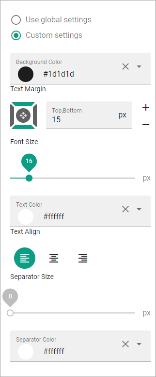
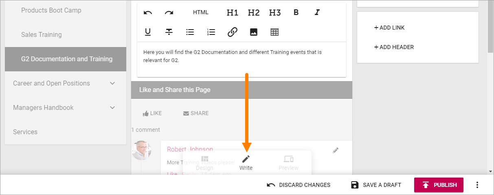
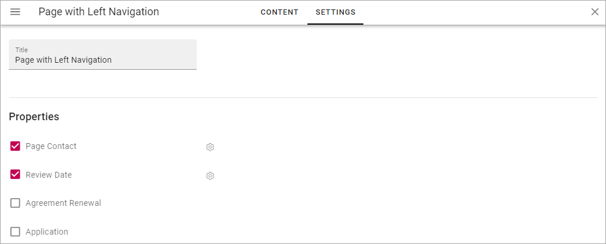

Page Types¶
If you are Publishing App administrator you can work with Page Types. A page type contains sections where blocks can be placed for content. Sections can be targeted.
Some blocks can be added to a page type so they are a part of the layout presented to editors of a page based on the Page Type. See the bottom of this page for more information on blocks that belong to the Page Type.
When a new page is created, the Editor or Author can choose page type from any available in the page type list.
Edit a Page Type¶
To edit a page type, do the following:
- Go to any page.
- Edit the page.

- Open this menu (if it doesn’t open automatically):

- Open the list of page types at the bottom:

- Select the page type you want to edit.

- Click “Edit”.

- To edit settings for a section, click the section, and then the cog wheel.

For information about various settings and how to place Blocks, see below.
Create a new Page Type¶
To create a new page type when you’re editing a page, do the following:
- Click the plus for Page Types.

- Add a name for the new page type and click “CREATE”.

- Click the plus to add a section.
- Select a base layout.

See the images on the icons for the layouts, for a simple preview of the layout.
- Use the section settings:

General¶
Under General, the following can be set:

- Width Type: Set dynamic width (“Full Page”) or a fixed width in pixels. When you have selected Fixed, a slider is shown where you can set the width.
- Column: Using the sliders, set a width for each of the column. Default = same width for every column.
- Add Column: You can add a column if needed. The same settings as above can then be used for the new column.
To remove a column, click the dust bin. By clicking the pen, the following can be set for a column:

- Chrome: Set boxed or not for the column.
- Color: The background color for the column can be set here.
- Elevation: If the column should stand out from the page, use the slider to set how much.
- Custom CSS: You can use custom CSS for formatting the column.
Spacing¶
Here you can set the following:

- Section Padding: Here you can set some padding within the active section.
- Column Spacing: Here you can set the spacing between the columns in this section.
- Block Spacing: You can set spacing between blocks in this section.
Style¶
This can be set for Style, for the active section:

- Minimum Height: You can make sure that this section always has a minimun height, regardless of what is shown in the section. Set the height in pixels here.
- Background color: A default background color for sections are set in Omnia Admin. You can set another background color for this section here, if needed.
- Background image: Another option is to use an image as background in this section. When you click “Add Image”, the Media Picker starts, see this page for more information: Media Picker
- Elevation: With this setting you can make the content of the section “stand out” from the page.
Header¶
Here you can set the following:

- Title: If you want a Title to be displayed for the section, add it here. Not mandatory.
You can then decide to use the global settings for the business profile, or custom settings.
The global settings are set in Omnia Admin, see the bottom at this page: Header Settings
When selecting custom settings, the following is available:
This is the same settings as for the global settings, see the link above.
Targeting¶
A section can be targeted by using this setting:

Targeting must have been setup in Omnia Admin for this to work, see that section on this page: Properties
To set up targeting for the section, do the following:
- Click “Add Targeting Filter”.
- Select Property for Targeting.

- Select one or more children for the property.

Or:
- Select “Include Children”, to include all children pf the property.

- Click “Add Targeting Filter” to add additional filters.

To remove a targeting filter, just click the X.

Create a Section in a Column¶
If needed, you can create a section in a column and then select a layout for the column and set all other section’s settings. Here’s how:
- Click the plus for the column.
- Open the Layout list.
- Select layout for the column.
- Set the section’s settings (see above).
If needed, you can even go a step further and create a new section in one of the new columns.
Delete a section¶
If you need to delete a section, here’s how to do it:
- Click in the section (not on any plus).

- Click the dust bin for the section.

Move a section¶
Do the following to move a section to another placement on the page.
- Click the section.
- Click the Move icon.
Icons now show where you can move the section, for example:

- Click the icon where you want the section and it’s moved there.
Copy a section¶
If you need a section with roughly the same settings somewhere else on the page, you can copy a section and place the copy where you want it, and then edit the settings. Do the following:
- Click the section.
- Click the Copy icon.
Icons now show where you can add the new section, the same way as when you move a section, for example:

- Click the icon where you want the copied section and it’s placed there.
- Edit the settings that you want to change.
Adding blocks to a Section¶
Here’s how to add a block to a section:
- Click the plus for the section.
- Select block to add.

Here’s an example with a block added:

You add additional blocks, work with the settings, move or delete blocks the same way as editors do when editing a page, see: Working with Blocks
Note! When editing a page, blocks that belong to the Page Type is locked, meaning they can not be moved or deleted, and settings for those blocks can’t be edited. But content can be edited, if applicable, using Write mode.
More information on editing blocks when editing a page, is found here: Edit a Page
Decide to show a section on a device or not¶
When you’re working on a section you can select to show it on different devices or not.
Click this icon:

You can now use the following settings:

To hide a section for a device, do the following:
- Select the device.
- Click the pen for Visibility.
- Select Hide Section.
To add som padding for the section, for a specific device, do the following:
- Select the device.
- Click the pen for Section Padding.
- Set the padding.
Settings¶
On the “Settings” tab you can set the Properties for all pages created from this Page Type. In many cases it results in fields the page editor has to or can fill in for a page. You can select any of the properties defined in the tenant. See this page for more information about setting up properties: Tenant Settings - Properties
Here’s an example with a Page Type with left navigation:
It results in these fields being available on the Properties tab for a page:

And here’s an example with a Page Type for News:

Which results in these fields being available on the Properties tab for a News Article page:

Set properties for the Page Type this way:
- Select the properties to be used for this Page Type.
- Click the cog wheel for more settings for a property.

Something like the following is shown:

The following settings can be available for a property:
- Required: The editor creating the page has to enter information in the field.
- Allow multiple values: For some properties multiple values are possible. If you will allow the editor to enter more than one value, check this option. If multiple values is not possible for the property, this option is not shown.
- Show in new page: If the property (field) should be available in the New Page Wizard when creating a page, select this option.
- Show in edit properties: If the property should be available on the Properties tab for a page created from this Page Type, select this option.
- Date only: If it’s a date/time field, both date and time can be set, or only the date. If you would like juat the date to be set, not the time, select this option.
- Receive e-mail: This is available for most people properties. If the colleague set for this property should receive e-mails, select this option.
- Category: This a preparation for future functionality. No need to enter anything here now.
- Default value: A default value can be entered here. A defalt value can be edited by the author. What is possible to select here differs with type of property.
- Limit Edit Permission: You can limit Edit Permission for this property if needed. In that case, add one or more users here.